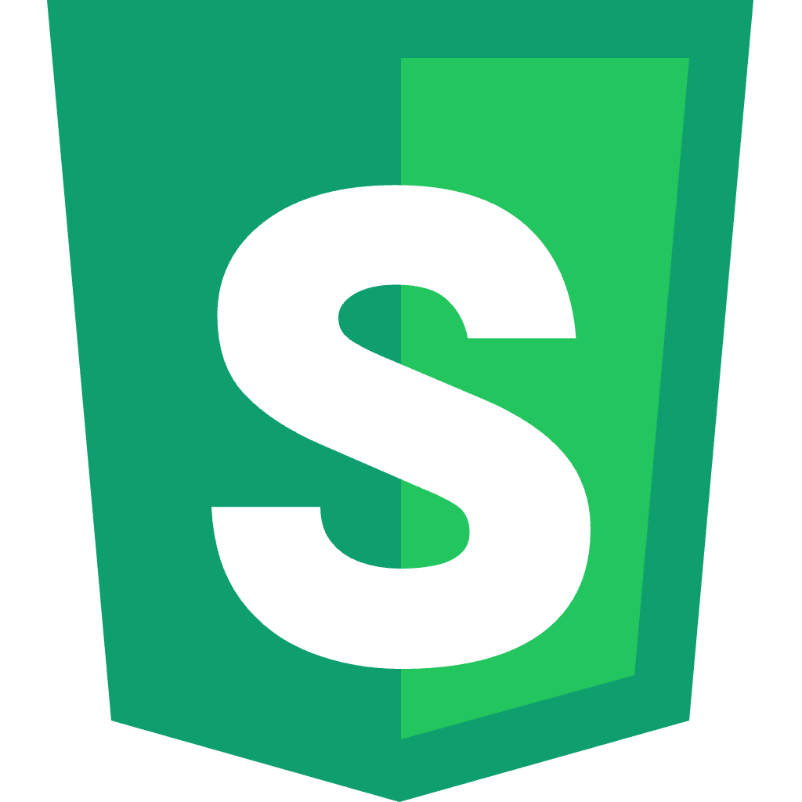

<link rel="statica/fragment" type="text/html" href="./icon-github.html" id="icon-github" />
<link rel="statica/fragment" type="text/html" href="./language-switcher.html" id="language-switcher" />

<template id="site-header" data-bind="{i18n}">
  <header class="site-header">
    <div class="navbar shell">
      <div class="navbar-start">
        <a class="brand" href="#top" aria-label="statica home">
          
          <span>statica</span>
        </a>
      </div>
      <nav class="navbar-center nav-links" aria-label="Primary navigation">
        <a class="btn btn-ghost btn-sm" href="#why" data-t="${i18n.nav.why}">Why</a>
        <a class="btn btn-ghost btn-sm" href="#how" data-t="${i18n.nav.how}">How it works</a>
        <a class="btn btn-ghost btn-sm" href="#install" data-t="${i18n.nav.install}">Install</a>
      </nav>
      <div class="navbar-end header-actions">
        <slot id="language-switcher"></slot>
        <a class="btn btn-sm btn-outline github-button" href="https://github.com/akaizn-junior/statica">
          <slot id="icon-github"></slot>
          GitHub ↗
        </a>
      </div>
    </div>
  </header>
</template>
